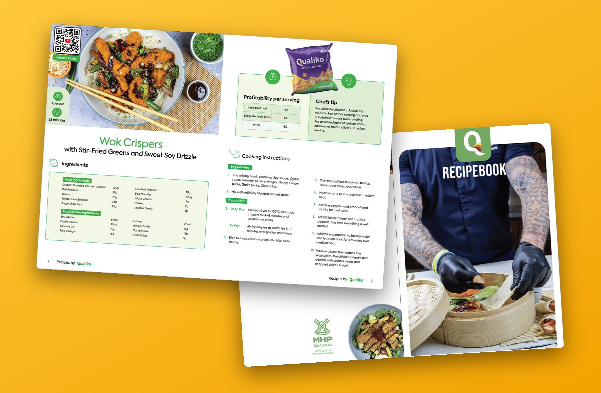
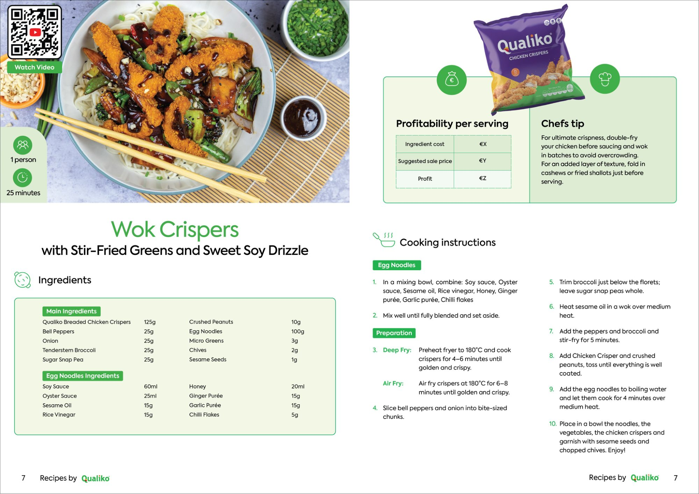
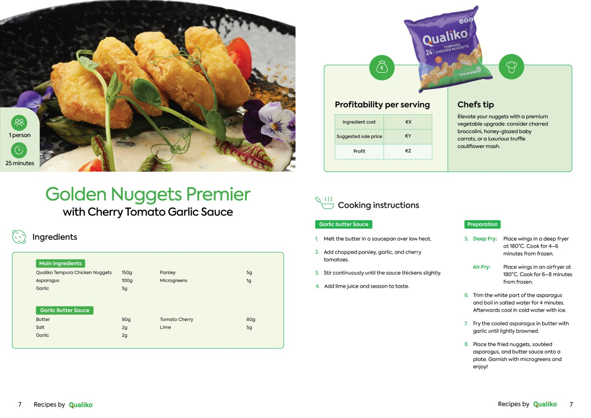
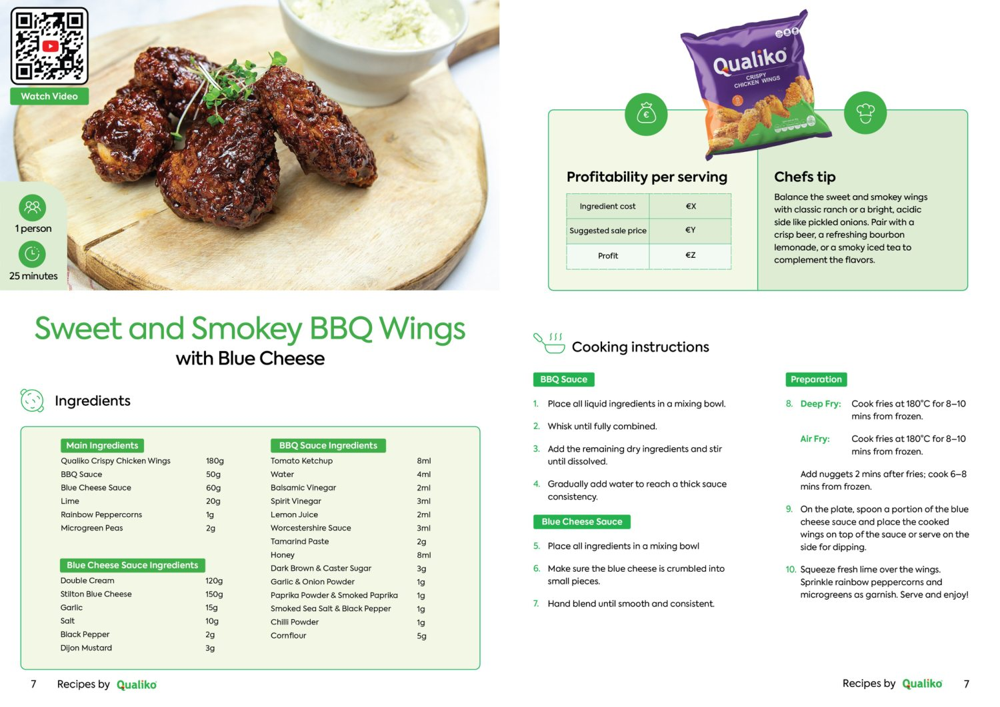
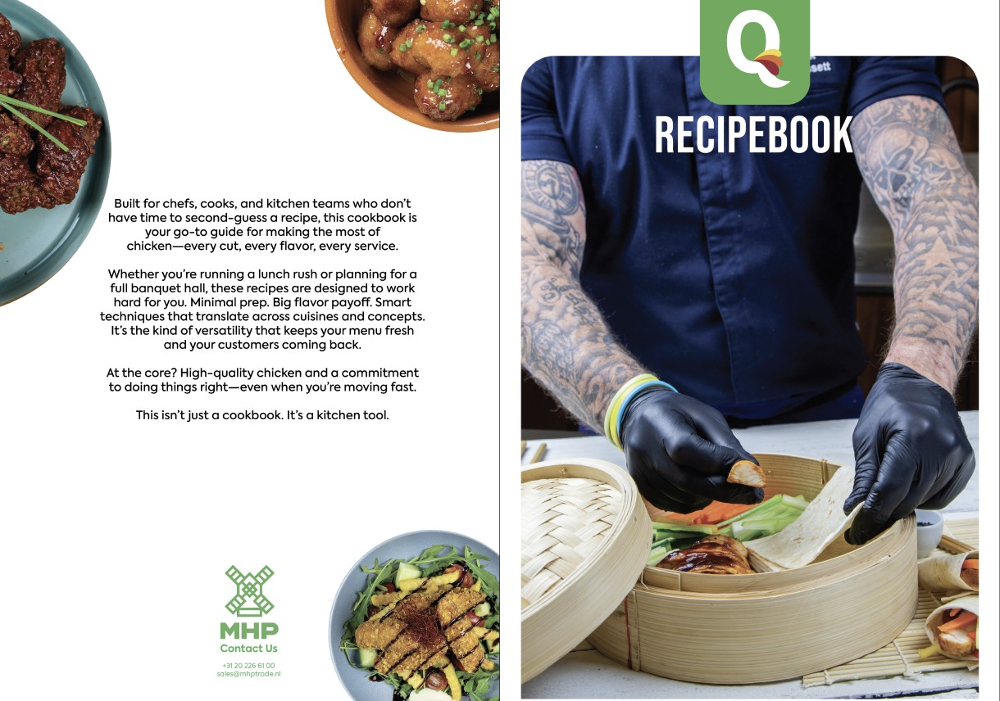

Branding · Digital Design
Qualiko Recipe Book
A 50-recipe publication for a large-scale chicken manufacturer, balancing clear information with an engaging editorial style. We designed the layout and the brand identity as a duo.

a recipe page
One spread per dish.
Every recipe gets the same page: the dish photo, servings and cooking time, ingredients grouped by component, and numbered steps with both deep-fry and air-fry times.
- A QR code on the photo links to the recipe video.
- A profitability box lets a kitchen fill in cost, sale price and profit per serving.
- A chef's tip sits next to the Qualiko pack the dish is made with.

the system
Same grid, different dish.
Across the book the layout stays put, so a cook always finds the ingredients and the steps in the same place. Only the photo and the product pack change.


the cover
A book for the kitchen.
The opening spread pairs a chef at work with a short note telling chefs and kitchen teams the book is meant to be used, not just read.

looking back
What I'd do differently.
I'd find more ways to create variation within the visual system, while still sticking to the design norms of a recipe book.
Next up
Walkwise